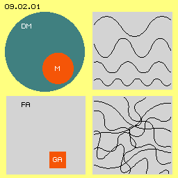
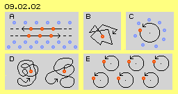
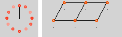
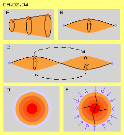
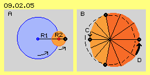

Dunkle Höhle
Wir wissen wie man Bauteile zusammen fügen muss, um bestimmte Effekte zu erzielen - was warum wie funktioniert, bleibt aber meist verborgen. Begriffe wie ´Masse, Trägheit, Schwere, Anziehung oder Abstoßung usw.´ kennen wir aus der Handhabung solcher Teile und Teilchen - aber die wahre Ursache dieser Erscheinungen konnte bislang noch nicht wirklich erkannt werden. Wie Platon mit seinem berühmten ´Höhlen-Gleichnis´ vor langer Zeit aufgezeigt hat, sehen und kennen bzw. handhaben wir offensichtlich nur ´Schatten-Figuren´ - und nur gelegentlich haben wir eine Ahnung davon, was außerhalb der ´dunklen Höhle´ vonstatten gehen könnte. Wir bemühen uns sehr, den Hintergrund realer Erscheinungen und Ereignisse zu erkennen. Möglicherweise wären wir erfolgreicher, wenn wir die Sichtweise ändern: im Vordergrund muss es eine reale Basis geben, aus welcher sich scheinbare Erscheinungen ergeben.
Dunkle Materie

Nach gängiger Anschauung wird unterstellt, dass jedes Atom zum weit überwiegenden Teil aus ´Nichts´ besteht. Die letztlich als real existent betrachteten Elementar-Teilchen (Elektronen, Protonen, Neutronen oder diese wiederum bestehend aus Sub-Elementarteilchen) würden somit einen noch vielmals kleineren Anteil ergeben. Nach aller verfügbaren Logik kann aber nichts aus Nichts bestehen. Es kann überhaupt keine totale Leere bestehen (wie bislang z.B. als ´Vakuum´ bezeichnet). Sonst würden sich zwangsweise alle materiellen Teilchen in das angrenzende Nichts auflösen. Ersatzweise müssen fiktive Axiome zusätzlich unterstellt werden wie z.B. die schwache und starke Kernkraft. Diese werden als ´selbstverständlich real existent´ betrachtet, aber nur weil sie im gängigen Atommodell notwendig sind. Real konnte noch nie erklärt werden, warum und wie die gewünschte Funktion erreicht werden könnte - ein typischer Fall des obigen ´Höhlen-Gleichnisses´.
Freier und Gebundener Äther
Es ist nur eine Art von Äther erforderlich, um alle physikalischen Erscheinungen zu ermöglichen. Beispielweise unterscheiden sich die Atome gegenüber obigem Freien Äther lediglich durch ihre interne Bewegungs-Struktur. Solche lokalen Einheiten bilden einen stabilen Verbund individueller Bewegungsmuster und werden hier generell als ´Gebundener Äther´ bezeichnet. Wie oben angesprochen wurde, sind insgesamt maximal fünf Prozent allen Volumens des Universums als Gebundener Äther (GA, rot) vorhanden und ´manifestieren´ u.a. die ´materiellen Partikel´. Das restliche, weit überwiegende Volumen (draußen im All und natürlich auch zwischen den Atomen) ist Freier Äther (FA, hellgrau).
Strahlung und chaotische Bewegung
Nach gängiger Auffassung erfordert Strahlung kein Medium, da sie ja auch durch ein Vakuum fliegt. Strahlung wird als irgendwie geartete Bewegung betrachtet, aber ein bewegtes Nichts kann es nicht geben. Erst wenn unterstellt wird, dass der ganze Raum erfüllt ist durch den Äther, ergibt sich logischer Weise, dass jede Strahlung eine bestimmte Bewegung im Äther darstellt.
Alle Strahlung kann sich überlagern. An jedem Ort dort draußen im Freien Äther, überlagern sich damit Schwingungen aller Art. Der Äther wird ständig hin-und-her gezerrt in allen drei Richtungen des Raumes. Dieser ´Wellen-Salat´ ergibt also eine geradezu chaotische Bewegungsform, wo jeder ´Ätherpunkt´ sich nur auf kurzen Bahnen bewegt, in einem ´Knäuel´ von Bewegungen pausenlos herum schwirrt auf relativ engem Raum. Dennoch ist es möglich, mit relativ einfachen Geräten aus diesem Chaos eine bestimmte Frequenz heraus zu filtern - z.B. durch die ´mysteriöse´ Arbeitsweise eines Radio-Empfängers.
Geschwindigkeit, Dichte, Energie-Konstanz
Der Schall in der Luft stellt ein Bewegungsmuster dar. Im Prinzip ist die Druckfront eine Verdichtung, die sich sofort wieder entspannt. Nur diese Bewegungs-Struktur läuft vorwärts durch den Raum, jeder Luft-Partikel schwingt dabei nur etwas vor und zurück, bleibt aber prinzipiell an seinem Ort. Analog dazu rasen keine ´Photonen-Teilchen´ durch das All, vielmehr wandert nur das entsprechende Bewegungs-Muster im Äther vorwärts. Aller Äther ´zittert´ also nur vorübergehend an seinem Ort.
Die Schall-Bewegung wird von Teilchen zu Teilchen weiter geben und je nach Dichte des Mediums mit unterschiedlicher Geschwindigkeit. Zudem geht jeweils beim ´elastischen Stoss´ zwischen den Partikeln ein Teil der kinetischen Energie verloren (letztlich ins Nichts nach gängiger Lehre). Der Schall breitet sich seitlich aus, in jedem Fall aber wird der Schall sehr schnell schwächer - weil sein Transport an materielle Teilchen gebunden ist.
Wenn nun die Photon-Bewegung über Lichtjahre hinweg mit praktisch unveränderter Geschwindigkeit durch den Äther weiter gegeben wird, muss dieses Medium entsprechend höhere Dichte aufweisen. Wenn das Licht auf dieser weiten Stecke kaum an Intensität verliert, kann es nicht per elastischem Stoß von einem Äther-Teilchen zum nächsten weiter gegeben werden. Wie bei obigem Schall ginge die kinetische Energie letztlich in das Nichts (der Lücken zwischen den Teilchen des Mediums) verloren. Der Äther kann darum nicht aus einzelnen Teilchen zusammen gesetzt sein, sondern muss ein lückenloses Ganzes sein.
Das mag auf den ersten Blick als Unmöglichkeit erscheinen. Da der Äther aber die einzige real existente Substanz ist, kann er sehr wohl diese ´ungewöhnliche´ Material-Eigenschaft aufweisen. Der Äther als Basis aller physikalischen Erscheinungen muss zwingend dieses Kontinuum sein, weil nur darin niemals die kinetische Energie verloren gehen kann. Die Energie-Konstanz ist oberstes Natur-Gesetz (sonst wäre das Universum längst den Kälte-Tod gestorben). Alle Bewegung unter Teilchen weist
unausweichlich Reibung- bzw. Wärmeverluste auf. Darum kann der reale Hintergrund aller Erscheinungen nur ein teilchen-loses Medium sein.
Unmöglich
Teslas Vorstellung einer "hauchdünnen Grundsubstanz, die mit ungeheurer Geschwindigkeit in nie endenden Wirbeln herum geschleudert wird" ist da wesentlich eingängiger. Seltsamer Weise hat nur Einstein in späten Jahren explizit festgestellt, dass "der unabdingbar existente Äther nicht wiederum aus ponderablen Teilchen zusammen gesetzt sein kann". Allerdings konnte er nicht mehr die Konsequenzen aus diesem lückenlosen ´Äther-Plasma´ ziehen (und die RT-Protagonisten weigern sich bis heute, diese späte Feststellung des gereiften Einsteins überhaupt zur Kenntnis zu nehmen).

In der zweiten Zeile sind rote Punkte markiert, die sich nach links bewegen. Solche linearen Bewegungen sind nicht möglich, weil links von diesen Ätherpunkten kein freier Raum ist. Alle dortigen Ätherpunkte müssten ebenfalls weiter nach links laufen, durch das ganze Universum. Auch alle Ätherpunkte weiter rechts müssten folgen, weil in diesem Äther keine Lücken entstehen dürfen / können. In der dritten Zeile bewegen sich einige Punkte nach rechts. Auch das ist nicht zulässig, es können sich generell in diesem zusammen hängenden Medium keine Teile gegeneinander verschieben.
Oben wurde festgestellt, dass Freier Äther fortwährend ´zittert´. Bei B ist eine Spur von abgewinkelten Bewegungen skizziert - aber so kann sich Äther niemals bewegen. Die ´Äther-Masse´ ist träge und weil bei Bewegung eines Ätherpunktes alle Nachbarn ebenfalls involviert sind, kann es niemals abrupte Verzögerung und Beschleunigung in eine andere Richtung geben (und auf diesem Hintergrund basiert auch die Trägheit aller ´materieller Massen´).
Ebenso unmöglich sind rotierende Bewegungen (also wie ein mechanisches Rad um seine Achse dreht). Bei C bewegt sich ein roter Punkt im Kreis herum, während außen herum blaue Punkte ortsfest sind. Im Äther selbst kann es keine Scher-Bewegungen geben, es können niemals irgend welche Teile oder Teil-Bereiche aneinander vorbei schrammen.
Schwingen in vielen Variationen
Eine sehr wichtige Einschränkung ist bei E skizziert. Eingezeichnet sind sechs rote, eng benachbarte Punkte. Stark vereinfacht soll die Bahn kreisförmig sein. Alle benachbarten Punkte müssen im lückenlosen Äther prinzipiell konstanten Abstand zueinander aufweisen. Wenn ein Punkt sich auf seiner Kreisbahn bewegt, müssen sich darum alle Nachbarn synchron dazu verhalten, also ebenfalls auf entsprechender Kreisbahn schwingen.

Kegel, Kurbel, Doppelkurbel
Diese Ausweitung der Schwingungs-Radien ist ein entscheidendes Merkmal der Ätherbewegungen. Auch der Freie Äther bewegt sich auf vielen Kreisbahnen, wenngleich immer nur auf kurzen Abschnitten. Aus diesem ´Zittern´ heraus kann sich der Radius einer Kreisbahn erweitern (während die Radien anderer Teil-Kreisbahnen kürzer werden können), so dass das Bewegungsmuster dieses Kegels entstehen kann.
Wenn aller Äther vollkommen ruhend wäre, hätte diese Masse unendlich große Trägheit. Aller Äther ist aber überall schwingend, auch der Freie Äther. Dessen Bewegung setzt sich zusammen aus vielen runden Bahnabschnitten, die letztlich in sich geschlossen sind. Diese Bewegungsmuster sind nicht vollkommen starr, vielmehr können die Achsen von Bahnabschnitten kippen und deren Radien variieren. Dabei bleibt die kinetische Energie des Freien Äthers insgesamt konstant, auch wenn die Bahnen z.B. wie bei vorigem Kegel gestreckt werden.
Die weiteste Bahn muss letztlich wieder zurück geführt werden auf das enge Schwingen des Freien Äthers. Dieser Kegel bei A müsste also ergänzt werden durch einen spiegelbildlichen Kegel. Diese Form wird dann ´Doppelkegel´ genannt oder auch ´Kurbel´ (weil z.B. die Kurbelwelle eines Einzylinder-Motors davon eine ´eckige´ Variante darstellt). In diesem Bild ist oben rechts bei B solche eine Kurbel skizziert mit einer runden Verbindungslinie. Diese beginnt links beim ´ruhenden´ Freien Äther (blauer Punkt) und endet auch rechts wieder an einem ´ortsfesten´ blauen Punkt. Die benachbarten Ätherpunkte der Verbindungslinie bewegen sich auf erweiterten Radien, wobei mittig der rote Ätherpunkt das weiträumigste Schwingen aufweist (siehe Pfeil).

Innerhalb des Freien Äthers (die beiden blauen Punkte links und rechts) verläuft eine spiralige Verbindungslinie. Während ihres Schwingens beschreibt sie den Mantel von zwei ´Spindeln´ (hellrot markiert). Momentan ist der rote Ätherpunkt links nach oben geschwungen, während sich zugleich der rote Ätherpunkt rechts in seiner unteren Position befindet. Es ist momentan damit oben-links ´zu viel´ Äther vorhanden, oben-rechts aber ´zu wenig´. Es müsste also Äther von links nach rechts hinüber ´schwappen´, wie durch den gestrichelten Pfeil angezeigt ist. Unten ist die Situation umgekehrt und es müsste ´etwas Äther´ von rechts nach links hinüber schwingen.
Während der weiteren Drehung der Doppel-Kurbel müssen diese Ausgleichsbewegungen entgegen gesetzt verlaufen. Letztlich ergibt sich damit auch in der Senkrechten die Bewegung einer Doppel-Kurbel. Diese Anordnung ist ein sehr wichtiges Bewegungsmuster, weil damit ein Ausgleich innerhalb eines lokalen Bereiches gegeben ist. Nach diesem Prinzip erfolgen z.B. die Bewegungen innerhalb eines Elektrons und eines Wasserstoff-Atoms, also der weitaus häufigsten Erscheinungen im Universum (siehe nächstes Kapitel).
Ausgleichsbereiche, Ätherdruck
Rund um eine lokale Bewegungs-Einheit gibt es also immer einen ´Ausgleichs-Bereich´, in welchem die Bewegungen des umgebenden Äthers in das Schwingungs-Muster des inneren Raumes transformiert werden. In Bild 09.02.04 unten links bei D ist das schematisch dargestellt. Der Freie Äther (hellgrau) kann als relativ ´ruhend bzw. ortsfest´ bezeichnet werden (hier durch Hellblau repräsentiert). Der Rand-Bereich mit dem Übergang der Bewegungsmuster ist hellrot markiert. Von diesem Ausgleichsbereich weiter einwärts erfolgt das geordnete Schwingen auf zunehmend längeren Radien (durch unterschiedliches Rot markiert).
Das ist ein prinzipieller Unterschied zwischen den Bewegungen des ´materiellen Festkörpers´ gegenüber dem äther-internen Schwingen: ein Rad rotiert um seine Achse, wobei die Winkelgeschwindigkeit gleich bleibend ist, von innen nach außen aber die absolute Geschwindigkeit anwächst. Im Gegensatz zu diesem ´starren Wirbel´ bewegt sich Äther immer in Form von ´Potentialwirbeln´. Bei diesen ist sowohl die Winkelgeschwindigkeit als auch die absolute Geschwindigkeit von außen nach innen anwachsend (die erst im Zentrum reduziert wird). Lokale Bewegungseinheiten können also prinzipiell nur entstehen in Form solcher ´Potentialwirbelwolken´.
Vom Rand her rütteln und zerren die nervösen Bewegungen des Freien Äthers an den geordneten Bahnen des internen Schwingens. Es besteht also von außen ein Druck, indem das nervöse Rütteln in diese ´Wolke´ eindringen will. Der interne Potentialwirbel kann dem nur widerstehen, wenn er ein in sich geordnetes und stabiles Schwingen darstellt.
In diesem Bild unten rechts bei E ist dieser radial von außen zum Zentrum gerichtete Druck durch blaue Pfeile dargestellt. Ich nenne diese Erscheinung den ´Universellen Ätherdruck´ oder auch ´allgemeinen Ätherdruck´. Durch diesen generellen Druck der Umgebung werden alle Bewegungsmuster ´aufgerieben´, sofern sie nicht in sich stabil genug sind. Umgekehrt werden gut geordnete Einheiten durch diesen allseitigen Druck zusammen gehalten und stabilisiert. Bei E ist das interne Bewegungsmuster durch eine vertikale und eine horizontale ´Doppelkurbel´ gekennzeichnet (das extrem stabile Bewegungsprinzip eines Elektrons). Andere interne Bewegungsmuster ergeben andere physikalische Erscheinungen, z.B. die chemischen Elemente. Dieser allgemeine Äther-Druck ist ein entscheidender Effekt auch bei den Bewegungsmustern elektromagnetischer Erscheinungen - wie in späteren Kapiteln diskutiert wird.
Schwingen mit Schlag, Schub-Wirkung 
Eine Überlagerung ist hier eingezeichnet, indem am äußeren Ende dieses ´blauen Uhrzeigers´ eine zweite Kreisbewegung ansetzt mit Radius R2 (wie durch die rote Kreisfläche angezeigt ist). Am äußeren Ende dieses ´roten Uhrzeigers´ befindet sich der beobachtete schwarze Ätherpunkt. Je nach dem Verhältnis der Längen beider Radien, der Geschwindigkeit der Drehungen und deren Drehsinn, ergeben sich höchst unterschiedliche Bahnen. Hier wird einfach unterstellt, dass beide Kreisbewegungen mit gleicher Winkelgeschwindigkeit und in gleichem Drehsinn erfolgen (siehe Pfeile).
Rechts bei B ist der Bahnverlauf dieser Überlagerung dargestellt, wobei der Ätherpunkt in vier Positionen eingezeichnet ist (die er im zeitlichen Ablauf nacheinander einnimmt). Gegenüber dem originären (gestrichelten) Kreis mit Radius R1 ist die Bahn einerseits ausgeweitet (um die Länge R2, hier rechts) bzw. eingedellt (links). Der Ätherpunkt bewegt sich während der Hälfte der Zeit auf einem relativ langen Weg mit erhöhter Geschwindigkeit (dunkler Sektor) und während der zweiten Zeit-Hälfte auf kürzerem Weg und mit geringerer Geschwindigkeit (heller Sektor).
Hier ist nur der einfachste Fall skizziert, wo aus der Überlagerung von nur zwei Kreisbewegungen diese asymmetrische Bewegung resultiert. So wie es im Äther keine lineare Bewegung geben kann (siehe oben bei Bild 09.02.02 bei A), kann es auch kein Schwingen auf exakten Kreisbahnen geben, eben weil sich immer viele Bewegungskomponenten im Äther überlagern. Egal welcher Art diese Überlagerungen sind, es müssen sich zwangsweise immer Bahnverläufe mit Beschleunigung und Verzögerung ergeben. Innerhalb des Äthers ist also niemals ein völlig gleichförmiges Schwingen gegeben, vielmehr existieren prinzipiell höchst variable Bewegungsabläufe.
Wenn irgendwo im Äther solches ´Schwingen-mit-Schlag´ statt findet, müssen sich benachbarte Ätherpunkte wiederum synchron dazu verhalten. Das Schlagen kann nicht linear nur in eine Richtung gehen (sonst liefe es durch das ganze Universum). Diese Bewegung muss letztlich wieder in sich zurück laufen, also letztlich wieder im Kreis herum. Eine Fläche mit solch schlagender Bewegungs-Komponente besteht beispielsweise rund um die Erde als eine Scheibe von etwa 2 Millionen Kilometern. Wiederum im Sinne eines Potentialwirbels ist die schlagende Komponente außen sehr schwach und anwachsend zum Zentrum hin.
Dieses Schlagen bewirkt eine motorische Kraft, indem es z.B. die lokalen Bewegungsmuster der Atome zeitweilig deformiert. Jeder Schlag bewirkt praktisch einen minimalen Schub auf materielle Partikel. In diesem ´Whirlpool´ der Erde wird z.B. der Mond mit rund 1 km/s um die Erde herum geschoben. Weiter innen driften die geostationären Satelliten mit etwa 3 km/s rundum und ´verharren´ damit prinzipiell am gleichen Ort über dem Äquator. Dieses Bewegungsmuster existiert aber auch in kleinen und kleinsten Dimensionen. Diese motorische Wirkung spielt z.B. auch bei der Elektrizität eine entscheidende Rolle.
Möglich und notwendig
Diese Bewegungs-Einheiten haben keine festen Grenzen, sondern müssen immer einen Ausgleichs-Bereich aufweisen, innerhalb dessen der Übergang vom Zittern des Freien Äthers zur internen Bewegungsstruktur statt findet. Der umgebende Äther bewirkt immer einen Druck auf solche Kugeln, Scheiben oder Flächen. Deren Schwingen an längeren Radien und auf gestreckten Bahnen kann nur bestehen, wenn ihre interne Struktur ausreichend stabil ist, also intern kongruente Bewegungs-Abläufe statt finden.
Etwas in Bewegung
Im nächsten Kapitel müssen zunächst noch einige relevante Formen von Bewegungs-Einheiten des Gebundenen Äthers angesprochen werden. Danach können dann diese Aspekte übertragen und angewandt werden auf die ´Phänomene´ der Elektro-Technik - womit wiederum ´Etwas in Bewegung´ kommen möge.
Jemand drückt auf den Knopf an der Haustür und drinnen klingelt die Klingel. Jemand berührt den Schalter und das Licht geht an. Jemand gibt ´Gas´ und das Elektromobil beschleunigt. Die Elektrotechnik funktioniert - aber die eigentlichen Prozesse im Hintergrund bleiben seltsam mysteriös.
Ein gutes Beispiel hierfür bietet die Kosmologie. In Bild 09.02.01 ist oben links eine Kugel gezeichnet, deren Volumen das gesamte Universum repräsentieren soll. Nach einschlägigen Formeln wird die Masse aller bekannten Materie darin berechnet (dargestellt hier als rote Kugel M). Die zwischen den Himmelskörpern wirksamen Kräfte ergeben stimmige Ergebnisse aber nur, wenn zwanzig mal mehr einer zusätzlichen ´Dunklen Materie´ (DM) unterstellt wird (oder zusätzliche ´Energien´ unbekannter Herkunft).
Als Basis allen Seins wird sinnvoller Weise also unterstellt, dass das ganze Universum aus einer realen Substanz besteht. Der überwiegende Teil davon ist frei von den bekannten materiellen Partikeln und diese Regionen werden als ´Freier Äther´ bezeichnet. Das Nichts innerhalb der Atome besteht dann natürlich auch aus realem Äther. Allerdings ´durchdringt´ er nicht nur die bekannte Materie, vielmehr bestehen alle Atome durchgängig und ausschließlich aus diesem ´Material´.
In den intergalaktischen Räumen weit draußen im All gibt es kaum ´materielle Partikel´, dennoch herrscht dort keine Ruhe. Unzählige Strahlungen eilen durch den Äther, von unterschiedlichster Art, wie oben rechts stark vereinfacht durch diverse wellenförmige Kurven skizziert ist. Die ´elektromagnetischen Wellen´ kommen aus allen Richtungen, was unten rechts in flächiger Darstellung nur durch einige Kurven angezeigt ist.
Weniger als 1 mm/s kommt ein freies Elektron innerhalb eines elektrischen Leiters voran. In der Luft breitet sich Schall mit rund 330 m/s aus, also mindestens 300000 mal schneller. Die Lichtgeschwindigkeit ist mit ihren 300000 km/s nochmals um Faktor 1000000 schneller. Mit dieser irren Geschwindigkeit rasen Photonen quer durch den Freien Äther, wobei sich ihre Bewegungen praktisch überall überschneiden.
Unser Verstand hat die Aufgabe, das Überleben in der materiellen Umwelt zu garantieren. Für schnelle Entscheidungen sind feststehende Kategorien zu bilden, z.B. ´nützlich / unbedeutend / gefährlich´. Wir fühlen uns nur sicher auf festem Boden und handhaben feste Werkzeuge und meist feste (Bau-) Teile - und diese haben keine interne Bewegung. Also ist in einem lückenlos festen Äther auch keine interne Bewegung möglich - so die instinktive Feststellung bzw. so urteilt umgehend der gesunde Menschenverstand.
In diesem Bild bei D ist links eine Bewegung skizziert, die sich aus vielen kurzen Kreisbahn-Abschnitten zusammen setzt (real immer in allen drei Richtungen zugleich). In dieser Art kann man sich das ´chaotische´ Schwingen auf engem Raum vorstellen, welches den Freien Äther repräsentiert (der aber immer auf ´runden´ Bahnen sich bewegen wird, also niemals wie zuvor bei B skizziert wurde). Natürlich kann an einem Ort der Ätherpunkt auch etwas ruhiger schwingen auf etwas weiter gestreckten Abschnitten, wie bei D rechts skizziert ist. Die Ätherpunkte mit solchen Bahnen sind zwar stetig ´zitternd´, vereinfachend werden Ätherpunkte des Freien Äthers dennoch als ´ortsfest´ bezeichnen.
Die Bewegungen im Äther sind damit aber keinesfalls auf nur dieses völlig gleichförmige Verhalten von Punkten beschränkt. In Bild 09.02.04 oben links bei A sind drei benachbarte rote Punkte eingezeichnet, welche durch eine schwarzen Linie miteinander verbunden sind. Auf solchen ´Verbindungslinien´ sind unzählige Punkte benachbart, die analog schwingen. Als einfache Bahn ist wiederum ein Kreis angezeigt. Dieser weist links einen relativ kurzen Radius auf, der nach rechts größer wird. Alle Punkte auf der Verbindungslinie behalten konstanten Abstand zueinander. Aber die Punkte rechts schwingen auf weiteren Bahnen als die Punkte links. Die ganze Verbindungslinie beschreibt die Form eines Kegel-Mantels (hellrot markiert).
Es gibt also einerseits den Freien Äther mit seinem ´nervösen Zittern´ auf engen Bahnen und andererseits gibt es Bereiche Gebundenen Äthers, die durch besser strukturiertes Schwingen auf längeren Bahnen gekennzeichnet sind. Die lokalen Einheiten haben keine festen Grenzen. In einem Übergangsbereich findet vielmehr eine graduelle Streckung der Bahnen statt, indem die Radien von Kreisabschnitten länger werden.
 In dieser Animation ist der Bewegungsablauf visualisiert: rechts bewegt sich der Ätherpunkt sehr viel schneller im Raum als links. Es findet eine Beschleunigung statt mit anschließender Verzögerung. Es ergibt sich eine Bewegung mit schlagender Komponente, die in vorigem Bild durch den dicken Pfeil rechts bei D gekennzeichnet ist. Dieses rasche Schlagen wird kompensiert auf der anderen Seite durch die verzögerte Bewegung, wie links durch den kleinen Pfeil C angezeigt ist.
In dieser Animation ist der Bewegungsablauf visualisiert: rechts bewegt sich der Ätherpunkt sehr viel schneller im Raum als links. Es findet eine Beschleunigung statt mit anschließender Verzögerung. Es ergibt sich eine Bewegung mit schlagender Komponente, die in vorigem Bild durch den dicken Pfeil rechts bei D gekennzeichnet ist. Dieses rasche Schlagen wird kompensiert auf der anderen Seite durch die verzögerte Bewegung, wie links durch den kleinen Pfeil C angezeigt ist.
Dieses erste instinktive "Unmöglich!" hat also nur Berechtigung für die Festkörper unserer materiellen Erfahrungswelt. Innerhalb des teilchen-losen Äthers gibt es keine Lücken und dennoch ist darin vielfältige Bewegung möglich. Allerdings sind die Bewegungs-Möglichkeiten eingeschränkt bzw. es ergeben sich gerade darum ganz bestimmte Notwendigkeiten. Eine Bewegung kann nur statt finden, indem Ätherpunkte den Platz einnehmen, welcher zeitgleich durch eine korrespondierende Bewegung frei gegeben wird. Das ist prinzipiell nur möglich, indem alle Prozesse im Kreis herum vonstatten gehen. Weil alle Bewegungen prinzipiell im Drei-Dimensionalen statt finden, können lokale Bewegungs-Einheiten nur in Form von Kugeln oder scheibenförmig (wie z.B. Galaxien) oder flächig (wie z.B. Ladung auf Leitern) auftreten.
Die Erscheinungen und Prozesse der Elektro-Technik basieren auf diesen Eigenschaften des realen Äthers. Die hierfür wichtigsten Merkmale sind damit kurz beschrieben. Für ein tieferes Verständnis wäre es sinnvoll, die ausführlichen Grundlagen meiner Äther-Physik zu studieren (aus den Jahren 2003 und folgende die Teile 01 bis 04). Seit 2009 habe ich im achten Teil ´Etwas in Bewegung´ die Eigenschaften des Äthers nochmals präziser definiert und für viele ´Phänomene´ eine plausible Erklärung aufgezeigt. Im vorigen Jahr habe ich das ´Evert-Äther-Theorem´ nochmals graphisch dargestellt in der dortigen Zusammenfassung.
09.03. Relevante Erscheinungen
09. Äther-Elektro-Technik